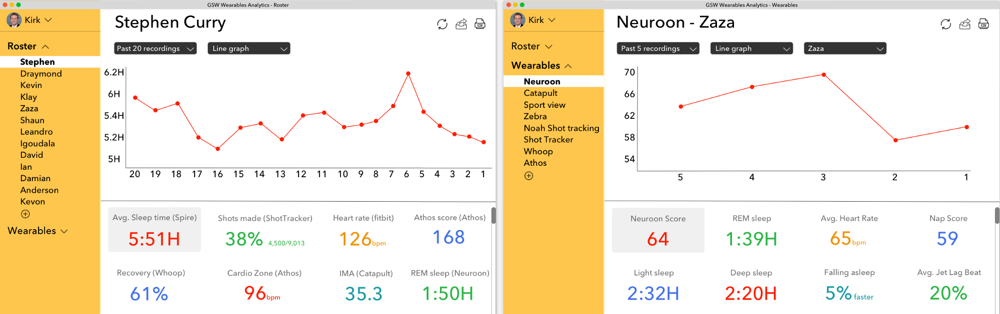

Similar to many professional sports teams, the Golden State Warriors use a range of wearables to track everything from players’ recovery to their heart rate to their sleep patterns. Data analysts filter through the data produced by these devices, find patterns, and present these findings to the training staff — often in rapid progression as decisions can be timely.
For example, NBA teams like the Warriors may use Catapult in practice (clipped to the player’s jersey) to calculate a variety of metrics including: velocity, acceleration, change of direction and total distance traveled. Using this, Catapult creates a score to gauge the amount of stress a player is putting on their body. Training staff can then use this information to make decisions like whether they should rest the player during the next game.
Unfortunately, there’s a lot of grunt work associated with visualizing the data produced by multiple devices, sharing it amongst the team and searching for historical patterns. This leads to slower, less informed decisions, which results in more preventable injuries, underperformance, and lost games.
Guided by the belief that each category of data requires a singular location to access all of that category’s recorded data, we decided to design the following for the Warriors: an analytics dashboard that aggregates the performance metrics of each player — metrics that were recorded through a player’s various wearable devices — and visually present this data in a beautiful, seamless, and shareable way. You can think of it as similar to Welltok providing a consumer with a dashboard of their aggregated wearable device data but for enterprise-level sports teams tracking their player’s performance.
Using this dashboard, the Warriors would be able to toggle between the team’s roster, wearable devices, player metrics, data history, and format of data visualization. In addition, Warriors can share the data they are viewing, refresh the page for updated metrics, and download it to their computers in .csv format. Click here to click through the mockup (when navigating, click anywhere on the page to see where to click next).
When creating the dashboard, our goals were to create an interface that minimized page shifting, was intuitive to navigate, displayed only essential information, and used popping colors; overall, we wanted the Warriors team to enjoy using the dashboard.
We began by being empathetic to the needs of the Golden State Warriors’ data analysts and training staff. Considering what would make them better decision makers, we strove to make the dashboard’s key functionality be in its data visualization, sharing, and search.
Upon signing in, the user is brought directly to the profile of Stephen Curry under the Roster tab. This is done to immediately deliver the core value of the platform, which is to visualize aggregated data that is searchable and shareable; we hope this maneuver will shorten the learning curve associated with the dashboard’s adoption amongst the team. A Warrior can toggle between each player to access the player’s recent metrics, and using the scroll button, can scroll down the page to view additional metrics. The visual data (Warriors can opt to see data in a line graph, bar graph or table) is always displayed at the top of the page, where Warriors can select the number of past data recordings they desire to view. “Recordings” are used instead as a unit of measurement such as “days” since certain metrics are recorded more often than others. We displayed values on the graphs’ x-axis in descending order instead of increasing order. This is done to make the output of selecting “past x recordings” be as intuitive as viewing a stock market graph, where the oldest data points are always closest to the graph’s origin. When selecting Wearables on the side panel, the user is directed to viewing the Neuroon score of the entire team (again, to immediately deliver core value). A Warrior can switch between wearable devices to view the metrics associated with that device for the entire team or an individual player.
Clicking the circling arrows will refresh the page to present more recent data (connected through Bluetooth), the arrow emerging from the box will share the selected data, and the document with the lettering “CSV” will download the selected data to the user’s computer in a .csv file. These three buttons — especially the one to download data in csv format — creates massive value for Warriors data analysts and training staff who can now easily execute tasks that previously would’ve been laborious if done in the database that stores the wearable data. When a Warrior clicks on their profile, they are not directed to a new page but simply to a pop-up where they can edit their account information and quickly revert back to the dashboard. This is an example template for the Golden State Warriors that can be modified for use by any team in any pro sports league. We’ll allow each user to customize their dashboard’s colors and content (e.g., metrics tracked, players, wearables).
We’ll build the dashboard initially as a web application since the desktop is where most data analysis is done and coaching decisions are made. Afterwards, we’ll build a mobile app to allow training staff to make decisions on the move through a tablet or smartphone.
In later product iterations, we hope to gradually incorporate machine learning into the dashboard to alert the user when a player’s performance has deviated from the norm. For instance, after collecting multiple years of data on Thompson’s endurance workouts, the Warriors’ dashboard could intelligently determine the amount of minutes he should play in the next game for peak performance and injury prevention. To solve for loss of data when players are traded, it would be interesting if each sports league set a standard where the team trading a player must give the player’s historical data to the new team.
We plan on adding features such as the ability to compare similar metrics, writing notes on graphs/text boxes, and searching specific dates for data. Most importantly, we’ll work closely with each team to help them customize the dashboard to their needs.
Separate from our product, we see the market for managing wearable device data only increasing as leagues such as the NBA begin allowing wearables to be used in games. The NBA is already forming a wearables committee that’ll determine which devices can be used in games. With this new in-game data, training staff and data analysts will increasingly need solutions that allow them to visualize, share, and search aggregated data. Similarly, as wearables become cheaper and more sophisticated, they’ll become more widespread and relied upon, making understanding the data they produce all the more important.
In short, sports teams will make wearables really work by using a dashboard like the one we’ve proposed. In doing so, the entire team will develop a much deeper understanding of the data produced by wearables, allowing them to take full advantage of wearables’ power.